Tactical Domain-Driven Design with Java and Spring
A hands-on, code-first guide to putting DDD tactical patterns (value objects, entities, aggregates, repositories) and Spring Modulith (application modules, events, async transactional listeners) into your codebase — and to verifying all of it with the type system, an annotation processor and ArchUnit.
Contents · 29 sections
TL;DR — the whole talk in 9 bullets
- The hard part of software is the green zone — taking an existing codebase to a new state. Optimise for understandability with chunking, hierarchization, and pattern languages (Carola Lilienthal, Sustainable Software Architecture).
- DDD's tactical building blocks — Value Object, Entity, Aggregate, Repository, Service — are the most familiar "pattern language" you can apply to a Java codebase.
- Architecturally evident code (George Fairbanks) means leaving traces of design decisions in the code. Use the domain language in class names, fields and database columns.
- J Molecules gives you a thin library of annotations and interfaces that express DDD stereotypes in Java — with ArchUnit rules that come for free to verify them, and a ByteBuddy Maven plugin that synthesises JPA mappings for you.
- Annotations vs interfaces: annotations let downstream consumers ignore J Molecules (the JVM only needs them at runtime if reflection touches them); interfaces give you type-system checks but bind consumers to the jar.
- Application Modules (the basis of Spring Modulith) are a horizontal cut of your application. By default a direct sub-package of the package that hosts
@SpringBootApplication. Public types in that package form the module's API. - Three interaction styles between modules — direct injection, Spring events, asynchronous transactional events — trade coupling against consistency guarantees in a very predictable way.
- @ApplicationModuleListener is Spring Modulith's shortcut for "this is a cross-module listener that runs eventually-consistent, asynchronously, with a guaranteed retry". The framework tracks publication in a database table so you can resubmit failed events later.
- The Scenario API (
@ApplicationModuleTest) replaces "mock 15 collaborators" with "stimulate the module and wait for the event you expect to see published" — which keeps your tests aligned with the verticals, not the horizontals.
Why this talk matters
Oliver opens with a Kent Beck quote — paraphrased — that frames the whole talk:
"There are only two activities you do to software: you either increase the value or you cut the cost. Nothing else makes sense."
The first is the fun part, the second is the part that pays the bills — and most of our work is the second. The brown wedge in the graph below is roughly 80% of a typical codebase's life:
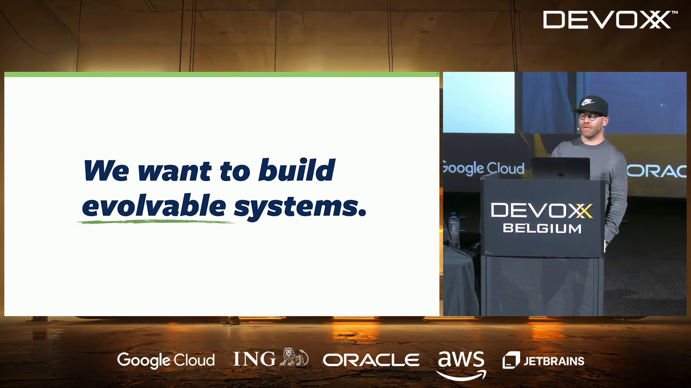
That cost is dominated by understanding an existing codebase. Oliver pulls in Carola Lilienthal's Sustainable Software Architecture as the empirical backing for three levers you have to make a codebase understandable:
Chunking
You don't read letter by letter. You read in chunks of meaningful units. The same should be true when you open a file in your IDE.
Hierarchization
Organise concepts in a hierarchy with a directed-acyclic dependency graph. Knowing the dependency direction lets you reason top-down.
Pattern languages
The more of your codebase can be assigned to a known pattern, the easier it is to maintain. DDD's tactical patterns are one such language — and one most Java developers already half-know.
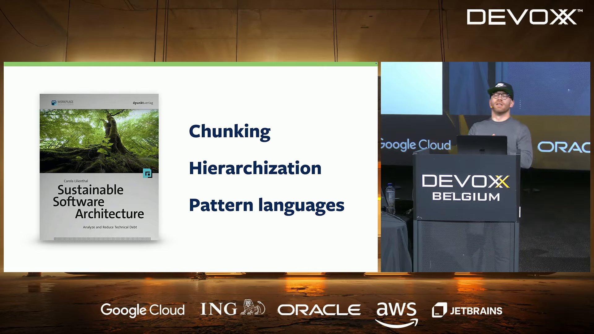
Code is a trace of design decisions. The more design we can leave behind — and the more we can verify that the trace matches our intent — the cheaper the brown zone becomes. DDD gives us the pattern language; J Molecules and Spring Modulith give us the Java idioms to leave that trace and the toolchain to verify it.
1.1 The empirical case for sustainable software
The talk repeatedly anchors on Lilienthal's maintainability studies: codebases that are organised around a recognised pattern language degrade slower and are easier to refactor. DDD's tactical patterns are explicitly identified in those studies as one of the most common languages teams can map their code to. That alone is reason enough to take them seriously.
1.2 The DDD tactical building blocks
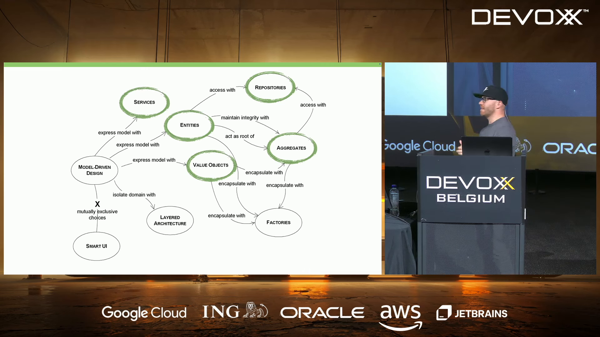
Eric Evans introduced (or, more accurately, named) a set of concepts and attached rules to each. They are the building blocks Oliver spends Part 1 on:
Value Object
An immutable, identity-less object defined purely by its properties. €20 is €20 regardless of which banknote you're holding.
Entity
An object whose identity matters and persists over time. Two Customer instances with the same name are not the same customer.
Aggregate
A consistency boundary around a set of entities. Everything inside an aggregate changes atomically; everything outside only sees it via its root.
Repository
A factory for aggregates — reconstituting them from persistence. By convention only aggregates have repositories; entities inside an aggregate do not.
Service
A stateless operation that doesn't naturally live on any single entity or value object — typically because it spans more than one aggregate.
These five concepts are very well established and very widely known. That makes them an unusually low-friction choice of pattern language for a Java codebase.
1.3 Architecturally evident code
The chapter 10 framing comes from Just Enough Software Architecture by George Fairbanks: every time we touch code we have to bridge the gap between the logical model in our heads and the physical code in the editor. The easier that bridging is, the cheaper the change.
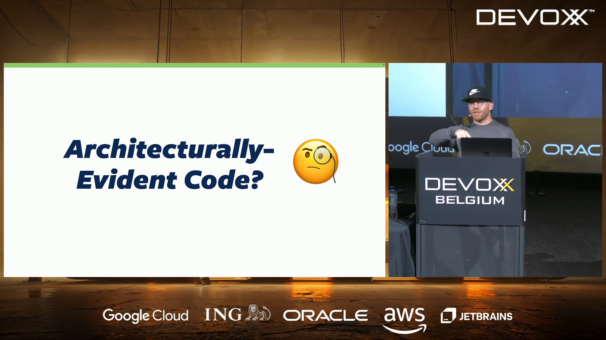
Fairbanks calls this architecturally evident code: the codebase itself tells you which concepts it implements. Two practical implications:
- Name classes, fields, columns and tables after domain concepts —
Customer,EmailAddress,ZipCode,orders.customer_id. Don't append technical suffixes (CustomerEntity,CustomerDTO) unless you have to. - If a concept has a rule attached to it (e.g. aggregates refer to other aggregates only by identifier), make the concept explicit in code so the rule can be checked.
1.4 Extensional vs intentional elements
Fairbanks (citing Adam Eden and Rick Kazman) categorises architectural elements into two kinds:
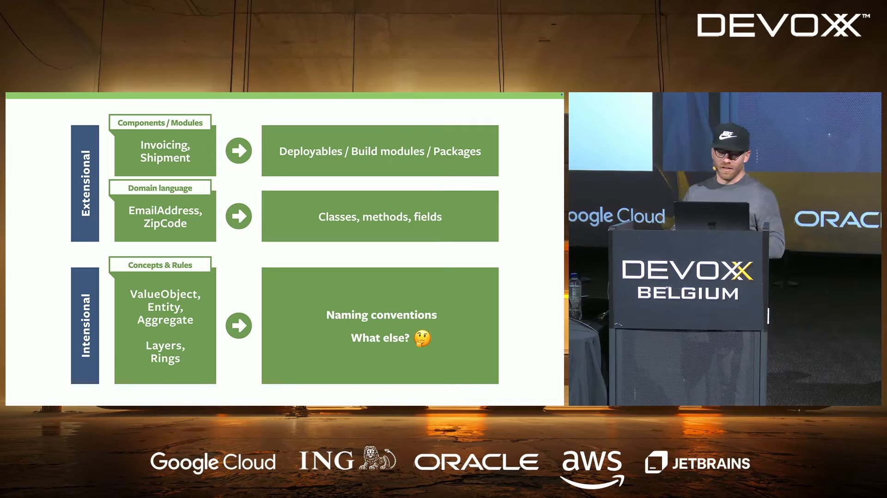
Extensional
Described by enumeration: "my system consists of Order, Inventory, Invoicing and Shipment." Translates easily to a package, a Maven module or a deployable.
Intentional
Described by a concept and a set of rules: "an Aggregate has a root, only references other aggregates by identifier, has exactly one Repository." These need a pattern language — and that is harder to embed in code than a name.
The rest of Part 1 is essentially the question: "what code-level mechanism expresses an intentional element?" The diagram above is the punchline — it's a hand-rolled UML slide in the talk where Oliver literally draws it on screen.
1.5 Verifying the model on the whiteboard
Even before writing any code, a DDD-fluent team can whiteboard a design and check it against the rules. Oliver uses a deliberately-broken example to make the point:
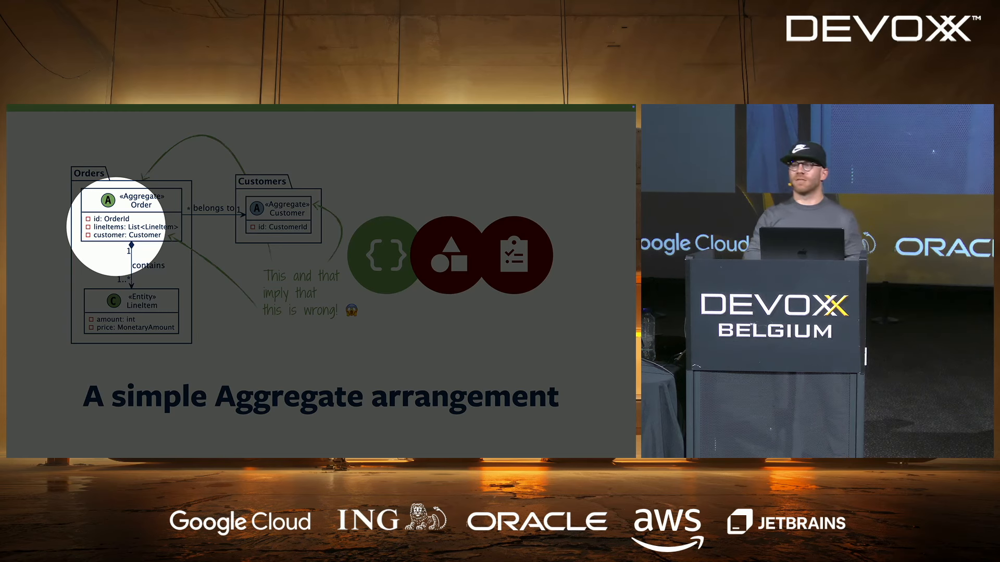
What's wrong? Vaughn Vernon spelled it out cleanly in Implementing Domain-Driven Design:
Aggregates only refer to other aggregates via their identifiers. Modelling an Order → Customer relationship as a full object reference couples two consistency boundaries together. The fix: model it as an identifier reference and resolve through the repository when you actually need the customer.
Two takeaways from this exercise:
- A team familiar with the pattern language can spot these violations on a whiteboard.
- Even better: the code should give us the same feedback — ideally without us having to hand-roll an ArchUnit rule for every concept we want to check.
1.6 Introducing J Molecules
J Molecules is the Java branch of the X-molecules idea (there are siblings for .NET and PHP). It is a deliberately thin library — basically annotations and interfaces — that lets you express DDD stereotypes in Java code:
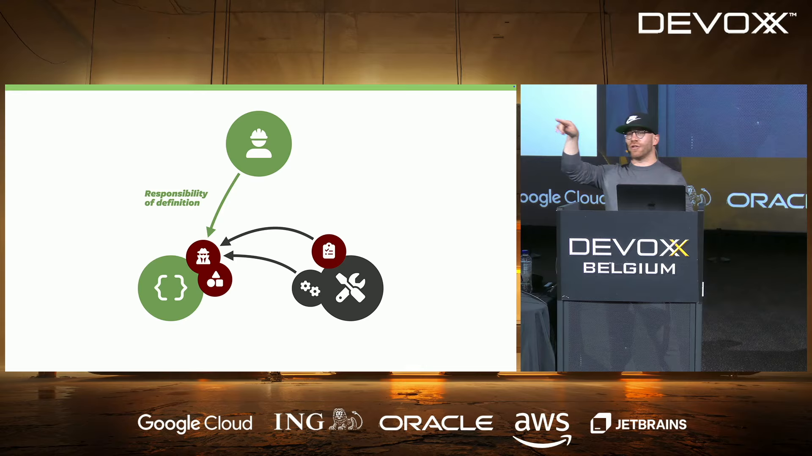
Concretely, J Molecules provides:
- DDD annotations/interfaces —
@AggregateRoot,@Entity,@ValueObject,@Repository,Identifier,AggregateRoot<…>,Association<…>. - Events —
@DomainEvent,@DomainEventListeneron methods. - Architecture styles — annotations for onion / hexagonal layout and CQS systems.
- Integrations (optional) — ArchUnit, jqAssistant, ByteBuddy (JPA mapping), Spring (stereotype mirroring), Jackson.
The split between API and integrations is deliberate. You can adopt just the annotations and ignore everything else — there is no runtime weight if you don't pull in the integration jars.
1.7 Verifying DDD rules with ArchUnit
Oliver walks through a small Order / Customer / Address example. The codebase has an ArchUnit test:
// AggregateStructureVerificationTests.java
@AnalyzeClasses(packagesOf = Application.class)
class AggregateStructureVerificationTests {
@Test
void rejectsInvalidAggregateReference() {
JMoleculesDddRules.all().check(classes);
}
}The DDD rules are exposed as public static methods on JMoleculesDddRules, so you can run the full set (all()) or pick individual ones. Running this test against a deliberately-broken Order produces:
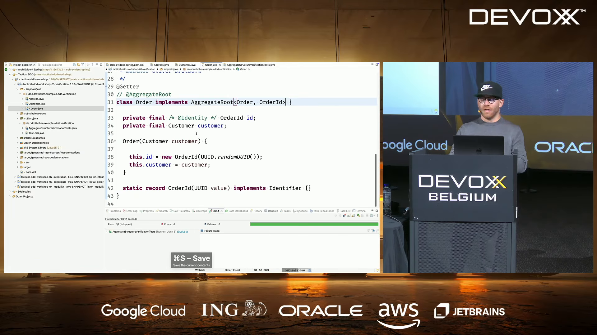
Order and Customer are made AggregateRoot…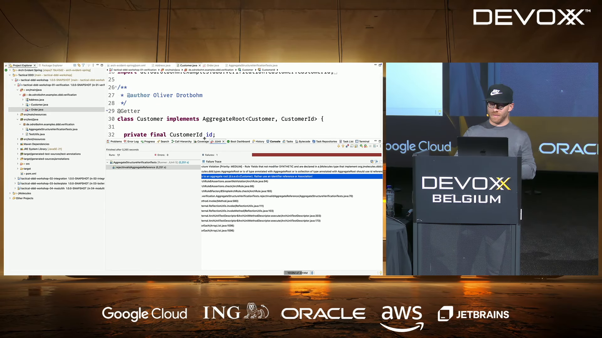
The fix is structural, not cosmetic:
// Before — broken: aggregates coupled via object reference
class Order implements AggregateRoot<Order, OrderId> {
private Customer customer; // ❌ wrong — full object reference
}
// After — fixed: identifier reference via Association
class Order implements AggregateRoot<Order, OrderId> {
private Association<Customer, CustomerId> customer;
}The interfaces are generic, so as soon as you write AggregateRoot<Order, OrderId> the compiler already enforces that OrderId must implement Identifier. The rules that can't be expressed in types (like "don't reference another aggregate by object") are caught by the annotation processor or by ArchUnit. So you get feedback at three depths: compile time (types) → compile time (annotation processor) → test/build time (ArchUnit).
J Molecules ships equivalent rule sets for jqAssistant and works with IntelliJ out of the box for everything that's an annotation processor.
1.8 Annotations vs interfaces — pick deliberately
J Molecules deliberately ships both a stereotype annotation and a typed interface for the same concept. Oliver's guidance:
Use annotations if…
- Your artefact is going to be consumed by code that doesn't (and shouldn't) have J Molecules on the classpath. Annotations are silently ignored if their jar is absent at runtime.
- You're decorating a non-type element (a method is a DomainEventListener, not a class).
Use interfaces if…
- You want compile-time generic enforcement (e.g.
Identifierbound onAggregateRoot<…>). - You're happy requiring J Molecules on the classpath.
If you don't enable the J Molecules annotation processor in your build, the only rule violations you'll see are the ones ArchUnit catches at test time — and you only see them when you run the tests. With the AP enabled, every javac run tells you about violations. That's a powerful ally, but you may not want to switch it on for a legacy codebase immediately. ArchUnit has a "freeze existing violations" mode that lets you start strict from day one while documenting the existing debt.
1.9 Killing JPA boilerplate with ByteBuddy
Oliver is explicit about the trade-off:
- "Persistent model as separate concern" camp — keep a pure domain model and map it to a JPA-specific persistence model (and again to the database). Justified when you don't control the schema or the API contract.
- "Owned database, single model" camp — when you own the schema, mapping between a domain model and a persistence model that always mirror each other is friction for no win. Just annotate the domain class.
His point is that the second approach gets much more attractive when you can let the persistence annotations be generated rather than written:
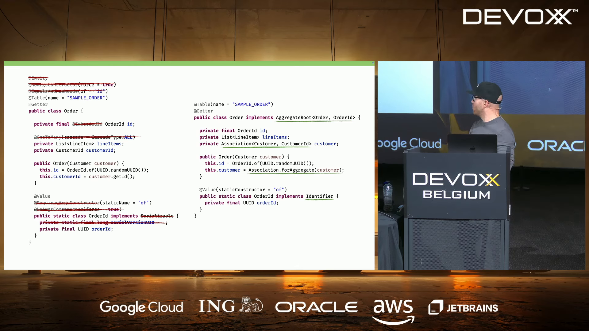
What J Molecules + the ByteBuddy Maven plugin will synthesise for you on classes that implement AggregateRoot, Entity or Identifier:
@Entity,@Embeddable,@EmbeddedId,@Inheritanceas appropriate.- A protected no-arg constructor for JPA's instantiation needs.
- Nullability verification callback methods that compensate for the no-arg constructor problem (otherwise you lose any meaningful non-null guarantee).
- Default one-to-many with cascade + orphan removal and a single-column join — because by definition an aggregate controls the lifecycle of its contents.
- Mirror annotations: a
@Valueon the domain side becomes a Spring@Serviceon the runtime side, and vice versa, so tool vendors can pick the language they care about.
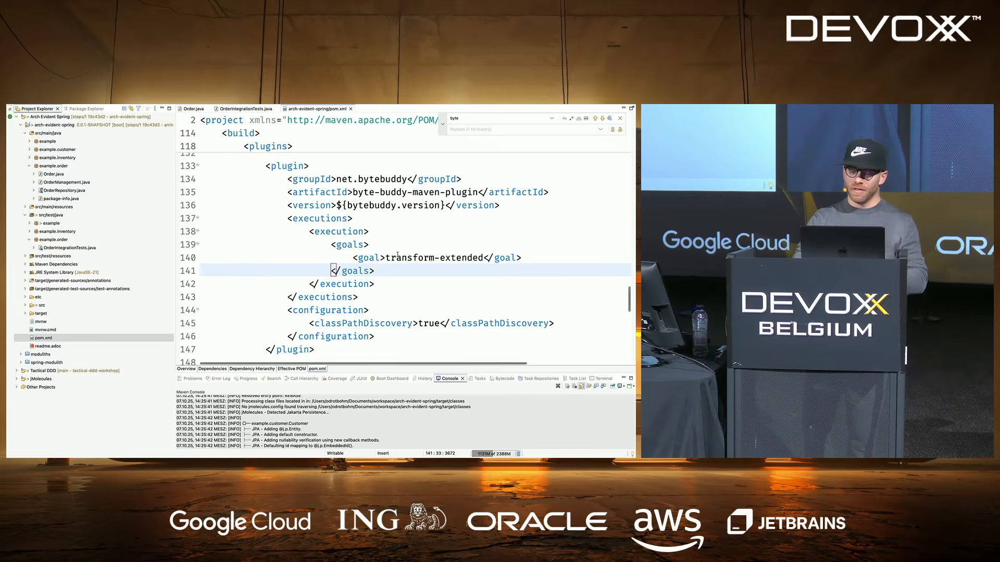
The Maven plugin is opt-in:
<!-- pom.xml -->
<plugin>
<groupId>net.bytebuddy</groupId>
<artifactId>byte-buddy-maven-plugin</artifactId>
<version>${bytebuddy.version}</version>
<executions>
<execution>
<goals><goal>transform-extended</goal></goals>
</execution>
</executions>
<configuration>
<classPathDiscovery>true</classPathDiscovery>
</configuration>
</plugin>Oliver is also clear that this is a team decision:
"Don't force this on people that don't think that way. If your team knows JPA inside out and would rather see those annotations, write them by hand. The integration is opt-in."
The same integrations exist for JDBC and Spring Data MongoDB. With document stores the mapping overhead is much smaller anyway, which is one reason document databases pair so naturally with aggregates.
1.10 IDE support — browsing by stereotype
J Molecules 2.0 ships a JSON descriptor of every stereotype it knows about (which annotation / interface marks it, what it means). The Spring Boot Tools for VS Code already consume that descriptor and render a project tree that groups code by stereotype rather than by file path:
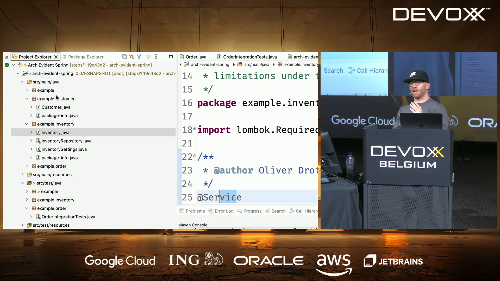
Two consequences:
- You stop abusing packages as a "service / persistence / controller" bucketing mechanism — which was always an antipattern, because the moment a class is in two layers at once it has to live somewhere awkward.
- You can define your own stereotypes with
@Stereotypeand have them show up in the IDE too. So your team's bespoke concepts ("Form", "ValueRule", whatever) are first-class citizens.
J Molecules turns the DDD tactical pattern language into a Java library. You get expressive code (the stereotypes are visible), verification (ArchUnit + AP + type system), boilerplate elimination (ByteBuddy), and IDE ergonomics (stereotype tree). Everything is opt-in.
1.11 Part 1 — summary in one sentence per idea
- Sustainable software is won by chunking, hierarchization and pattern languages.
- Architecturally evident code = leave traces of design decisions in the code.
- Extensional elements name themselves; intentional elements need rules.
- J Molecules is the thin layer that lets intentional elements live in Java code.
- ArchUnit + J Molecules DDD rules verify the model.
- Interfaces give compile-time generics; annotations are jar-optional.
- ByteBuddy + J Molecules synthesise JPA mappings — opt-in per team.
- IDE stereotype tree lets you browse by concept, not by package.
2.1 Cutting the onion — the modular monolith
Part 2 opens with a familiar slide — onion / hexagonal architecture — and then immediately pushes back:
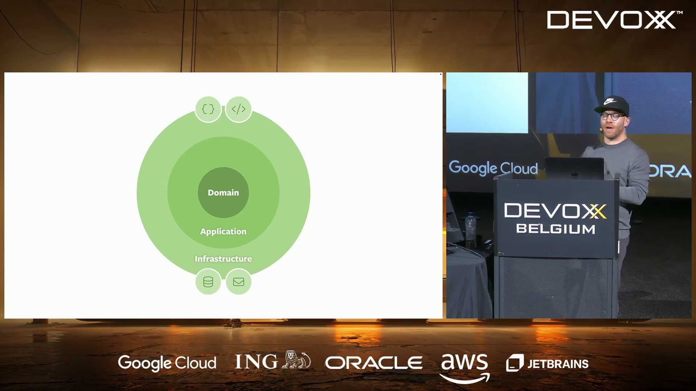
"None of these architectures have anything to do with modularisation."
Oliver's argument is that "domain-centric" architectures put the domain as a single thing at the centre. That was a useful move in the early 2000s when the hard problem was "test the domain code without booting an app server". But once you've accepted that the domain has multiple parts — orders, inventory, customers — the harder problem is the functional decomposition: how do you actually separate them? Onion, hexagonal and layered architecture all ignore that problem.
Oliver's metaphor: cut the onion. Slice it vertically and stack the slices side by side. Each slice is an application module:
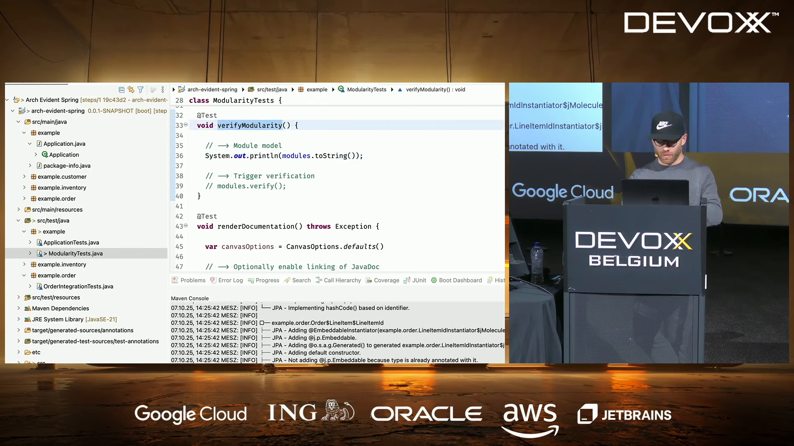
Important implications:
- Each module can still use onion / hexagonal / layered internally — that's an implementation detail.
- The interaction between modules happens at the application ring, by exposing Spring beans and / or publishing events. No going through full "infrastructure adapters" to talk to a sibling module.
- Whether to use hexagonal inside is governed by the module's domain complexity. A module that just serves reference data with a JDBC template is not committing a sin.
2.2 Application modules — the convention
The simplest expression of a module is just a package. Spring Modulith's default rule:
The direct sub-packages of the package that hosts your @SpringBootApplication class are application modules. Public types in that base package form the module's API. Everything else is internal.
No framework-specific code in your production sources. You can add Spring Modulith as a test-scope dependency, run its verifications, and the runtime artefact stays a plain Spring Boot jar. That's the key onboarding promise.
Optional: explicit module declaration with @ApplicationModule
If you want to make the boundary explicit, you can put a @ApplicationModule on the module's base package, or put it on the @SpringBootApplication class to declare which packages are the modules:
package example;
import org.springframework.modulith.ApplicationModule;
@ApplicationModule
package example.order;For a 90%-legacy codebase, you can also tell Spring Modulith where the module packages live, so you don't have to re-organise to start adopting it.
2.3 Verifying the module arrangement
The whole point of the package convention is that you can verify it cheaply. A typical test looks like this:
package example;
import org.junit.jupiter.api.Test;
import org.springframework.modulith.core.ApplicationModules;
import org.springframework.modulith.docs.Documenter;
class ModularityTests {
ApplicationModules modules = ApplicationModules.of(Application.class);
@Test
void verifyModularity() {
modules.verify(); // asserts no forbidden cross-module references
}
@Test
void renderDocumentation() throws Exception {
new Documenter(modules).writeDocumentation();
}
}The intuition behind modules.verify(): a module can depend on another's API surface (its public types) but not on its internals. That single rule already catches most "I imported a package-private class from a sibling" mistakes.
You can also be more prescriptive about what is and isn't allowed:
@ApplicationModule(allowedDependencies = "customer")
package example.order;If order then tries to depend on inventory, the verification fails — exactly as in §2.2.
2.4 Integration-testing a single module
Spring Modulith's most underrated feature is the @ApplicationModuleTest annotation. It bootstraps only the module under test, plus any mocks you provide. The output looks like this:
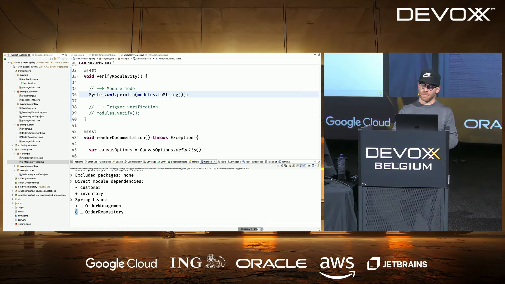
@ApplicationModuleTest boot log: only the inventory module's beans are in scope.Two bootstrap modes are worth knowing:
BootstrapMode.DIRECT_DEPENDENCIES (default)
Bootstrap the module you are testing. Mock any collaborators with Spring's standard @MockBean machinery.
BootstrapMode.ALL_DEPENDENCIES
Bootstrap the module and every transitive dependency that the module actually uses. No mocking needed for the in-graph modules.
This makes the testing strategy align with the verticals: you write a test in the module that owns the behaviour, and the framework decides what to bootstrap. No more "I need to start the whole world to test this one service".
2.5 Documentation as code
Spring Modulith can render module documentation straight out of the verified module model. The default is Simon Brown's C4 component diagram; Oliver's university students apparently prefer UML, so he shows both:
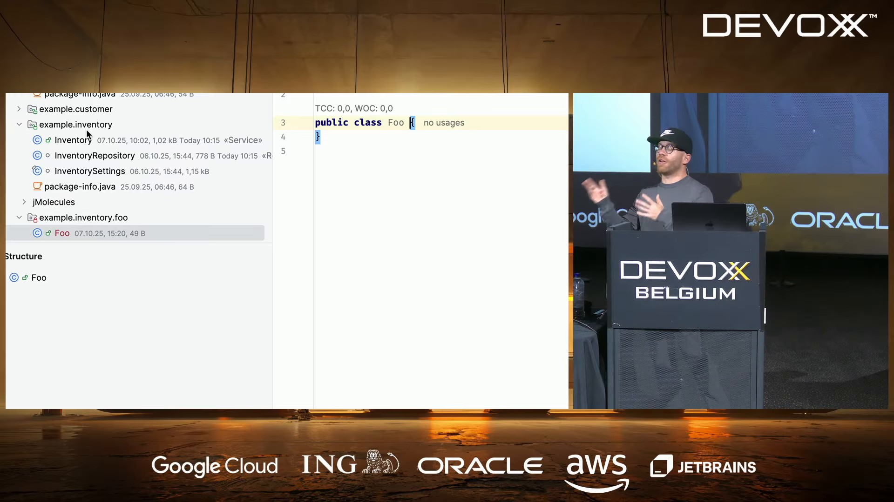
The same machinery can render, per module:
- The API surface: Spring beans exposed, aggregate roots exposed.
- The events it publishes and the events it listens to, with the Javadoc of the listener method if you bothered to write it.
- The configuration properties that influence the module's behaviour.
- An Asciidoctor bundle you can drop into a larger docs site, with deep-links to your Javadoc.
The killer property: it's correct by definition. It's a reflection of the source code, not a hand-maintained wiki page.
2.6 How modules interact — and why that matters
The second half of Part 2 is a long, careful comparison of the three ways modules can interact. Oliver motivates the discussion with a familiar story: an order checkout.
A typical e-commerce checkout has a primary thing it does (record the order) and several secondary things attached to it (update inventory stock, award rewards points, send a confirmation email). Those secondary things have very different severities when they fail:
The more secondary things you glue onto the checkout, the more likely it is that a bug in one of them blocks every order. The bug in the rewards program should not be in the way of accepting a customer order.
And then there's the testing corollary: every collaborator you inject into your checkout class becomes a mock in your test. The bigger the orchestra, the bigger the mock zoo. That's what motivates the move away from direct calls.
2.7 Style A — direct invocation (the default)
@Service
@RequiredArgsConstructor
class Checkout {
private final OrderRepository orders;
private final Inventory inventory;
private final RewardsProgram rewards;
private final NotificationService notifications;
@Transactional
void complete(Order order) {
order.markCompleted();
orders.save(order);
inventory.updateStock(order); // secondary #1
rewards.awardPointsFor(order); // secondary #2
notifications.sendConfirmation(order); // secondary #3
}
}Properties of this style:
- Coupling: very high. Checkout knows about every collaborator.
- Consistency: very high.
@Transactionalcovers the whole flow — if any collaborator throws, everything rolls back. - Testing: you have to mock every collaborator. Adding a new collaborator = updating the test.
- Failure blast radius: the rewards-program bug really does block every order.
This is the "fine starting point" Oliver keeps emphasising — don't replace it just because it's old. The trouble starts when the orchestra grows.
2.8 Style B — Spring events (synchronous)
@Service
@RequiredArgsConstructor
class Checkout {
private final OrderRepository orders;
private final ApplicationEventPublisher events;
@Transactional
void complete(Order order) {
order.markCompleted();
orders.save(order);
events.publishEvent(new OrderCompleted(order.getId()));
}
}
record OrderCompleted(OrderId orderId) {}@Service
class Inventory {
@TransactionalEventListener
void on(OrderCompleted event) { /* ... */ }
}Properties:
- Coupling: drops. Checkout no longer knows who listens.
- Consistency: unchanged.
publishEventis synchronous; if a listener throws, the original transaction rolls back. - Testing: assert that the right event was published (e.g. Spring's
AssertableApplicationEvents). Don't mock the listeners.
This is Oliver's recommended first step. You change structure but not consistency guarantees, which keeps the migration low-risk.
2.9 Style C — @TransactionalEventListener
The problem with synchronous listeners: they're still inside the original transaction. If Inventory.on() talks to an SMTP server (slow, can time out) or any external system, you're holding the database connection for no reason. And if the SMTP send succeeds but the database transaction later rolls back, you've sent a phantom email.
Spring's @TransactionalEventListener defers the listener until transaction commit. The connection is closed before the listener runs, so the SMTP timeout can't burn DB pool slots.
But that doesn't actually solve the held-connection problem; the connection is still open during the cleanup phase. So we go one step further.
2.10 Style D — @ApplicationModuleListener (async, eventually consistent)
This is Spring Modulith's flagship shortcut. Combine @Async + @TransactionalEventListener + a framework-managed retry registry, and you get:
@Service
class Inventory {
@ApplicationModuleListener
void on(OrderCompleted event) { /* ... */ }
}What that actually means:
- The listener runs on a separate thread from a Spring
Executor. - The original transaction closes before the listener runs.
- The listener runs in its own transaction.
- Successful runs are recorded in a database table; failed runs are recorded with the exception. You can resubmit them later.
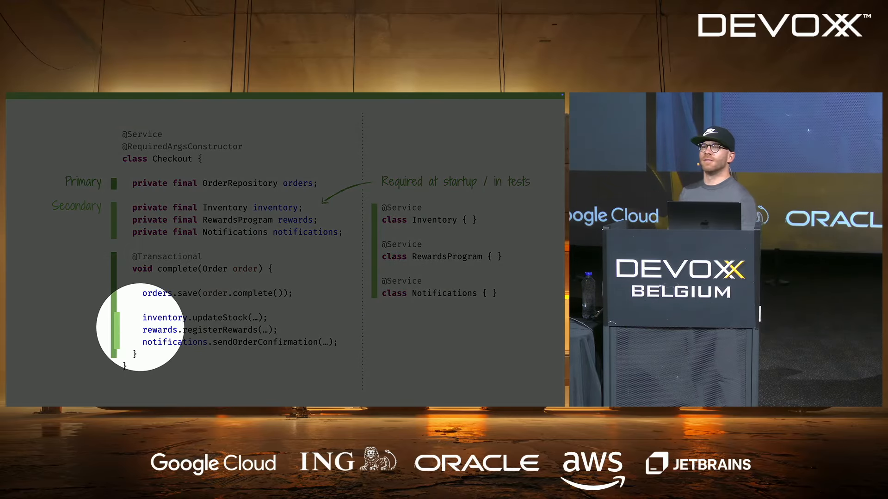
2.11 The Event Publication Registry
Oliver demos this live. The console output walks through what the registry does:
- Inside the original transaction, JPA inserts an
EventPublicationrow for each@ApplicationModuleListenerthat will need to run. Status:PROCESSINGlater, but for now just a pending row. - The original transaction commits.
- The async listeners fire on the executor. Each one updates its publication row to
COMPLETEDon success orFAILEDon exception. - Failed publications can be resubmitted via the registry API. They survive a restart because they're in the database.
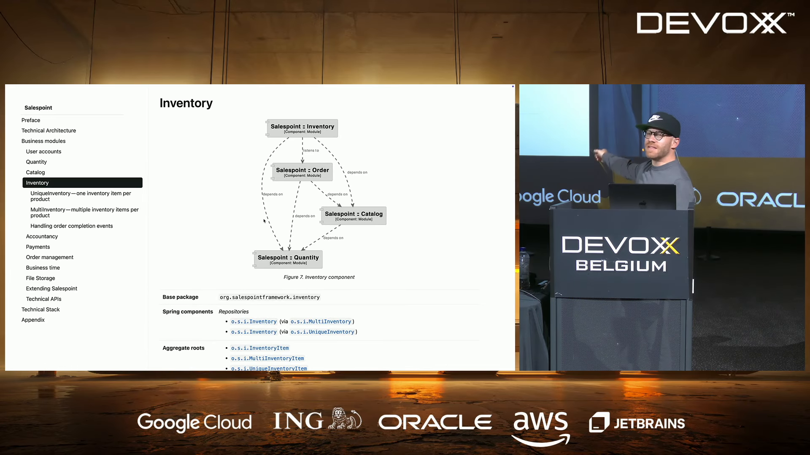
This is the part that turns async events from "fire and forget, hope for the best" into something you can run a business on.
Example: resubmitting failed publications
@Autowired EventPublicationRegistry registry;
void retryFailedNotifications() {
var failed = registry.findIncompletePublications();
var resubmission = ResubmissionOptions.defaults()
.batchSize(10)
.parallelism(2);
registry.resubmit(failed, resubmission);
}If you don't manually resubmit, the registry still tells you on shutdown that there are unpublished events left. In a crash-restart scenario they're just picked up next time the module boots.
2.12 The Scenario API — test modules by poking them
The Scenario API is the testing counterpart to the registry. Instead of "given the world, when the orchestrator runs, then this collaborator was called", you say "given nothing, when I stimulate this module, then I expect this event to eventually arrive":
@ApplicationModuleTest
class CheckoutTests {
private final Checkout checkout;
@Test
void completesOrder(Scenario scenario) {
var order = new Order(/* … */);
scenario.stimulate(() -> checkout.complete(order))
.andWaitForEventOfType(InventoryUpdated.class)
.matchingMappedValue(InventoryUpdated::getOrderId, order.getId())
.toArrive();
}
}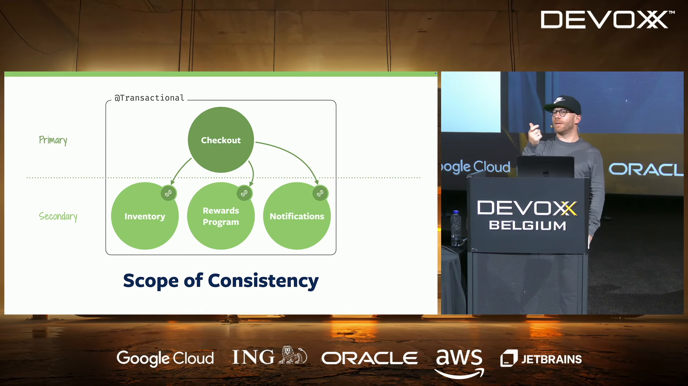
The Scenario API is backed by Awaitility under the covers, so you can customise timeouts and poll intervals. You can also wait for state changes (e.g. an order row going to status COMPLETED) rather than events.
2.13 Choosing an interaction style
Oliver ends with the table that motivates the entire comparison. He calls it "a monstrosity" because it's dense, but it earns its keep the moment you ask "should we use events here?":
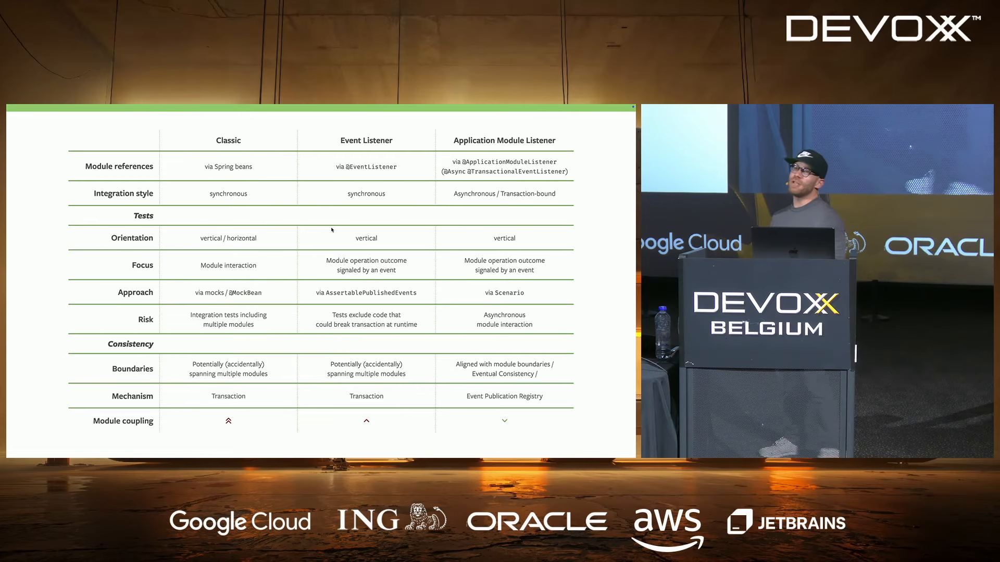
| Classic | Event Listener | Application Module Listener | |
|---|---|---|---|
| Module references | via Spring beans | via @EventListener |
via @ApplicationModuleListener (@Async @TransactionalEventListener) |
| Integration style | synchronous | synchronous | asynchronous, transaction-bound |
| Tests | orientation vertical / horizontal |
orientation vertical |
orientation vertical |
| focus Module interaction |
focus Module operation outcome signaled by an event |
focus Module operation outcome signaled by an event |
|
| approach via mocks / @MockBean |
approach via AssertablePublishedEvents |
approach via Scenario |
|
| risk Integration tests including multiple modules |
risk Tests exclude code that could break the transaction at runtime |
risk Asynchronous module interaction |
|
| Consistency — boundaries | potentially (accidentally) spanning multiple modules | potentially (accidentally) spanning multiple modules | aligned with module boundaries · eventual consistency |
| Consistency — mechanism | transaction | transaction | Event Publication Registry |
| Module coupling | High ↑ | Medium | Low ↓ |
"If you're stuck mocking 15 collaborators, see which interactions can become events — that changes the structure but not the consistency. Once you're comfortable with that, try @ApplicationModuleListener. Both moves prepare you for the day you need to extract a module into its own process, because then you're effectively doing the same thing over Kafka."
That's the long-term payoff: a modular monolith whose module boundaries are well-chosen is one well-behaved Kafka topic away from a microservice. The architecture doesn't change — only the transport does.
Resources
Everything in these notes comes from the talk itself and the libraries it features. The talk references the following for further reading:
- Carola Lilienthal — Sustainable Software Architecture (dpunkt.verlag). The empirical basis for the "chunking / hierarchization / pattern languages" framing.
- Eric Evans — Domain-Driven Design: Tackling Complexity in the Heart of Software. The source of the tactical pattern language.
- Vaughn Vernon — Implementing Domain-Driven Design. The source of the "aggregates only reference other aggregates by identifier" rule.
- George Fairbanks — Just Enough Software Architecture. Chapter 10 is the source of "architecturally evident code". Recommended via Simon Brown's Software Architecture for Developers.
- Adam Eden & Rick Kazman — the paper on extensional vs intentional elements that Fairbanks cites.
- Simon Brown — Software Architecture for Developers; the C4 model is the default rendering of Spring Modulith's documentation.
- Kent Beck — the "increase value / cut cost" framing that opens the talk.
The libraries:
- J Molecules —
org.jmoleculeson Maven Central. The specification jars are tiny; the integrations (ArchUnit, ByteBuddy, Spring, Jackson, JPA) are opt-in. - ByteBuddy Maven Plugin — used by the J Molecules integrations to synthesise JPA mappings at build time.
- ArchUnit — used to verify the J Molecules DDD rules at test time.
- Spring Modulith — first commit 2017; the production-ready version arrived with Spring Boot 3.x.
Oliver mentions companion talks given at the same conference:
- "What's new in Spring Modulith" — deeper coverage of named interfaces and nested application modules.
- "Domain-Driven: Why Hexagonal and Onion Architecture Are Answers to the Wrong Question" — the strategic-design companion talk.